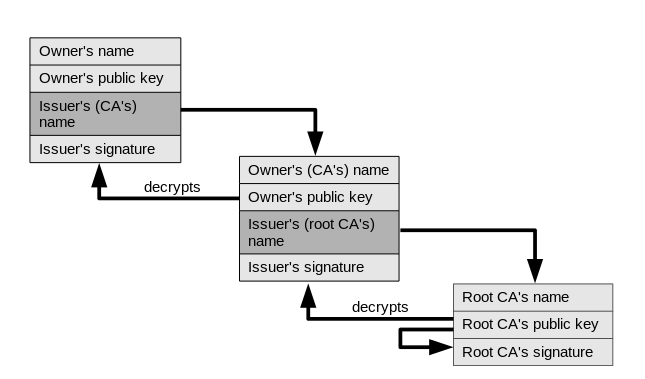

TLS/SSL
Akka Wamp supports TLS/SSL via configuration.
Configuration
By default, Akka Wamp loads the trust store shipped with the Java Runtime Environment.
ssl-config {
trustManager {
stores = [
{ type = "JKS", path = ${java.home}/lib/security/cacerts, password = "changeit" }
]
}
}The cacerts store contains almost all the accredited CA - Certificate Authorities that any client can happily trust. Next sections explain how to customize the above settings for both router and client special needs.
Router
To properly configure a router that binds to a TLS/SSL endpoint, it is important to make a clear distinction: either the router asks for the client’s certificate or it does not.
Akka Wamp doesn’t support routers asking for client’s certificates.
Certificate chain
In either cases, the router/server must own and present itself with a certificate having its public key attached. That certificate must have been issued and signed by some CA - Certificate Authority that any client can happily trust. The CA can be an intermediate authority or a root self-certified authority. In real world scenarios, the router/server’s (owner’s) certificate begins a chain of certificates, maybe with one or more intermediary issuers but certainly ending to some accredited root CA.

Key stores
As the router does not ask for client’s certificates, all it needs is to be configured with one or more key stores containing the public/private key pair, the owned certificate and the certificates of all the issuers in its certificate chain up to the root CA.
ssl-config {
keyManager {
stores = [
{ type = "JKS", path = ${router.home}/example.com.jks, password = "changeit" },
{ type = "JKS", path = ${java.home}/lib/security/cacerts, password = "changeit" }
]
}
# trustManager ... not needed!
}
Such a key store can be created using the Java KeyTool, with few commands as simple as:
PASSWD=changeit
ROUTER_HOME=/path/to/router/home
# It creates/updates a key store with
#
# - a new public/private key pair, and
# - a new certificate owned by example.com
#
keytool -genkeypair -v \
-alias example.com \
-dname "CN=example.com, OU=Example Org, O=Example Company, L=London, ST=London, C=UK" \
-keystore $ROUTER_HOME/example.com.jks \
-keypass $PASSWD \
-storepass $PASSWD \
-keyalg RSA \
-keysize 2048 \
-validity 365Certificate Authorities
In real world scenarios, a certificate such as the example.com we created above, must have been issued/signed by intermediary or root CA - Certification Authorities. For that reason, whoever owns the router/server creates and submits a CSR - Certificate Signing Request to some CA chosen at its discretion.
For test purposes, the router/server owner could create a “fake” self-signed root CA certificate with few commands as simple as::
# For test purposes, it creates/updates a "fake" root CA
# key store with:
#
# - a new public/private key pair, and
# - a new self-signed root CA certificate
#
# This fake root CA will issue/sign the example.com certificate
#
keytool -genkeypair -v \
-alias root-ca \
-dname "CN=Root Authority, OU=Root Org, O=Root Company, L=San Francisco, ST=California, C=US" \
-keystore $ROUTER_HOME/root-ca.jks \
-keypass $PASSWD \
-storepass $PASSWD \
-keyalg RSA \
-keysize 4096 \
-ext KeyUsage:critical="keyCertSign" \
-ext BasicConstraints:critical="ca:true" \
-validity 9999
# Exports the root CA certificate from the above key store to the
# root-ca.crt file, so that it can easily be imported into client's
# trust stores
#
keytool -export -v \
-alias root-ca \
-file $ROUTER_HOME/root-ca.crt \
-keypass $PASSWD \
-storepass $PASSWD \
-keystore $ROUTER_HOME/root-ca.jks \
-rfcSigning Request
For test purposes, the router/server owner could also create a CSR - Certificate Signing Request, so to simulate its submission and its completion, with few commands as simple as:
# Creates a CSR - Certificate Signing Request for the
# example.com certificate
#
keytool -certreq -v \
-alias example.com \
-keypass $PASSWD \
-storepass $PASSWD \
-keystore $ROUTER_HOME/example.com.jks \
-file $ROUTER_HOME/example.com.csr
# Simulates CSR submission and completion of the
# example.com certificate
#
keytool -gencert -v \
-alias root-ca \
-keypass $PASSWD \
-storepass $PASSWD \
-keystore $ROUTER_HOME/root-ca.jks \
-infile $ROUTER_HOME/example.com.csr \
-outfile $ROUTER_HOME/example.com.crt \
-ext KeyUsage:critical="digitalSignature,keyEncipherment" \
-ext EKU="serverAuth" \
-ext SAN="DNS:example.com" \
-rfc
# Finally, imports the signed certificate back into
# the example.com key store
#
keytool -import -v \
-alias example.com \
-file $ROUTER_HOME/example.com.crt \
-keystore $ROUTER_HOME/example.com.jks \
-storetype JKS \
-storepass $PASSWDClient
To properly configure a client that connects to a TLS/SSL router, it is important to make a clear distinction: either the router asks for the client’s certificate or it does not.
Akka Wamp does not support routers asking for client’s certificates.
The only scenario supported by Akka Wamp is the one the router does not ask for any client’s certificate. In this case, the client does not need to be configured with any “keys stores” but rather with “trust stores” only. Client’s trust stores shall contain the certificates of all the issuers in the certificate chain of the router.
Trust stores
By default, Akka Wamp loads the trust store shipped with the Java Runtime Environment, which contains almost all the globally accredited CA - Certificate Authorities. Therefore, it’s more likely you don’t need to change the default configuration at all.
For test purposes, the client might connect to a router owning a certificate issued by some fake root CA, such as the one created in the above section. In this case, the client needs to be configured with a trust store containing the certificate of that fake root CA.
ssl-config {
trustManager {
stores = [
{ type = "JKS", path = ${client.home}/trust-store.jks, password = "changeit" },
{ type = "JKS", path = ${java.home}/lib/security/cacerts, password = "changeit" }
]
}
}
Such a trust store can be create running scripts like the following:
PASSWD=changeit
ROUTER_HOME=/path/to/router/home
CLIENT_HOME=/path/to/client/home
# It creates/updates a trust store with
#
# - the certificate of the fake root CA who issue/signed
# the example.com certificate
#
keytool -import -v \
-alias root-ca \
-file $ROUTER_HOME/root-ca.crt \
-keypass $PASSWD \
-storepass $PASSWD \
-keystore $CLIENT_HOME/trust-store.jks << EOF
yes
EOF